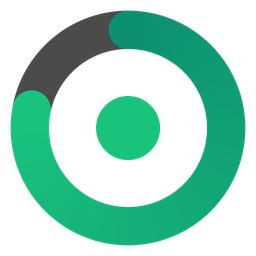
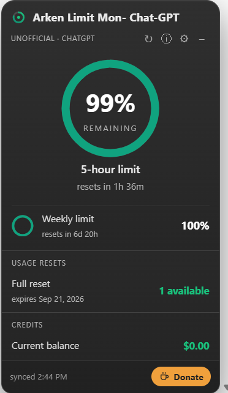
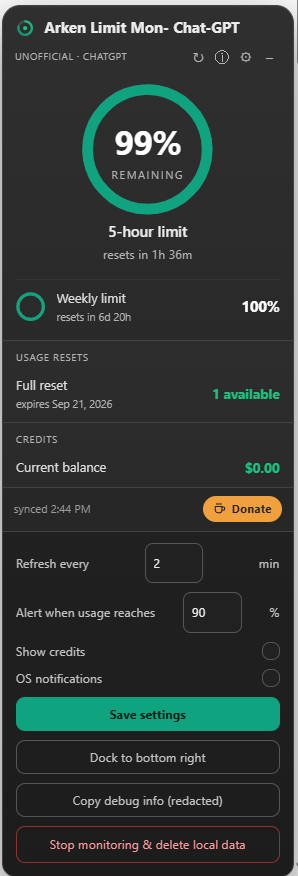
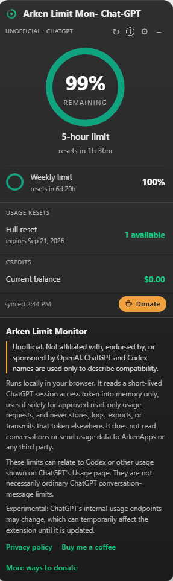
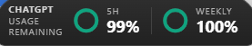

Arken Limit Monitor
A quiet ring gauge that shows your own ChatGPT usage — the 5-hour and weekly windows — with reset countdowns and a heads-up before you hit the wall.
Unofficial community tool · not affiliated with OpenAI
Know your runway at a glance
Reads only your own usage numbers, right on the page, so you never dig through settings.
Ring gauge
Your current 5-hour window front and centre, with the weekly window on the row beneath it.
Reset countdowns
Live “resets in 1h 36m” timers so you know exactly when your window refreshes.
Usage resets
How many full resets you have available, and the date they expire.
Threshold alerts
An optional desktop notification when you cross a level you set, so you can wrap up cleanly.
Docks and folds
Collapses to a pill flush with the bottom edge of the window. Drag it anywhere; the card expands upward.
Local & private
Runs entirely in your browser. No account, no external server, no conversation access.
These figures can relate to Codex or other usage shown on ChatGPT's Usage page. They are not necessarily ordinary ChatGPT conversation-message limits.
What it looks like in use
Docked in the corner of the page you're already working on.



Install in a minute
Works on Chrome, Edge, Brave and other Chromium browsers — Windows, macOS and Linux.
- Download ArkenLimitMonitor-ChatGPT-extension.zip from the latest release or from arkenapps.com, and unzip it.
- Open
chrome://extensions(oredge://extensions). - Turn on Developer mode (top-right).
- Click Load unpacked and select the unzipped
ArkenLimitMonitor-ChatGPTfolder. - Open or refresh chatgpt.com, then press Allow automatic monitoring when the widget asks.
Your data stays yours
This extension runs locally in your browser. It does not collect, sell, transmit or store your ChatGPT account data on any external server. There is no telemetry of any kind.
Nothing is requested until you press Allow automatic monitoring. It reads a short-lived ChatGPT session access token into memory only, uses it solely for approved read-only usage requests, and never stores, logs, exports or transmits that token anywhere.
The request allowlist is enforced in code — the token is only ever attached to the specific usage and reset-credit endpoints, and to nothing else. It does not read your conversations, and it does not send usage data to ArkenApps or any third party.
Normalised usage percentages, reset times, your optional credit balance, your settings and notification state are stored locally in this browser. Stop monitoring & delete local data in settings withdraws consent and clears all of it.
Experimental: ChatGPT's internal usage endpoints may change, which can temporarily affect the extension until it is updated.
The things people ask first
Does it read my conversations?
No. It requests a small set of usage endpoints — the same figures ChatGPT's own Usage page shows you — and renders them. Nothing else on the page is read, stored or sent anywhere.
Do I have to give it my password or an API key?
No. It uses the browser session you are already signed into. There is no login step and no token for you to paste.
Why does it ask permission before it starts?
Because it reads a session access token to make those requests, and you should decide that, not us. Nothing happens until you allow it, and one button in settings withdraws consent and erases everything stored locally.
Are these my chat message limits?
Not necessarily. The figures come from ChatGPT's usage endpoints and can relate to Codex or other usage shown on the Usage page rather than ordinary conversation messages.
Will it break?
Possibly. It depends on endpoints OpenAI does not document, so a change on their side can stop it working until it is patched. It fails quietly and shows the last known numbers rather than breaking the page.
Is it affiliated with OpenAI?
No. It is an independent community tool. “ChatGPT”, “Codex” and “OpenAI” are trademarks of OpenAI and are used here only to describe what the extension is compatible with.
Buy me a coffee ☕
Free and open source. If it saves you from a mid-task cutoff, a small tip keeps it maintained. No nags, no locked features.
Crypto


Always confirm the network and address in your own wallet before sending. Crypto transfers can’t be reversed.